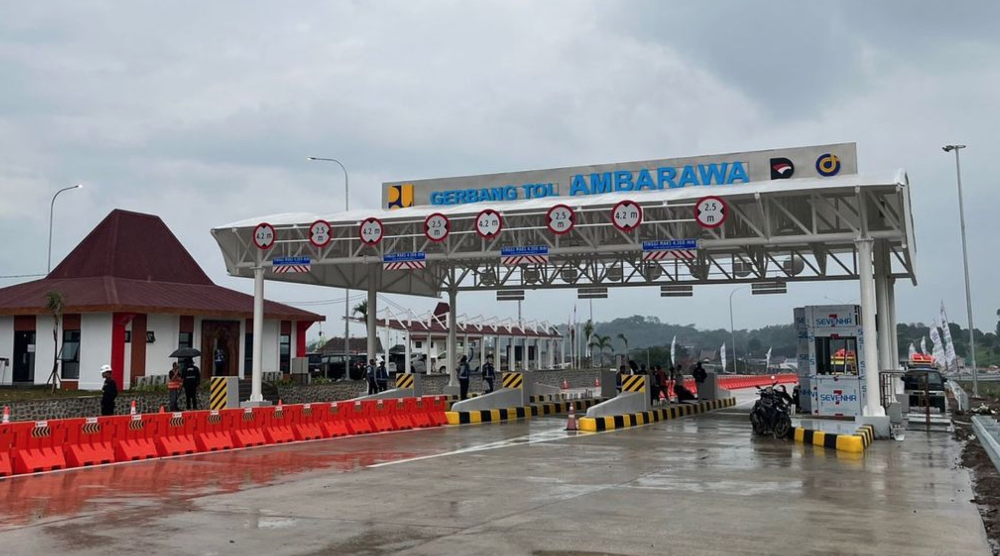
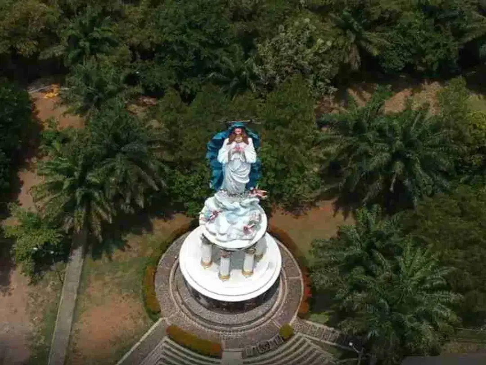

Wawasan & Tips
Blog Nirwana Kerep
Informasi santai seputar investasi tanah, legalitas kavling, dan peluang di Ambarawa — ditulis untuk Anda yang sedang mempertimbangkan langkah serius.

Investasi
Prospek Investasi Tanah di Ambarawa 2026
Kenapa Ambarawa masih menarik untuk investasi tanah tahun ini? Pengaruh tol, wisata, dan posisi JOGLOSEMAR.
Baca selengkapnya
Edukasi / How-to
7 Hal Wajib Dicek Sebelum Beli Kavling SHM
Checklist praktis agar pembelian tanah Anda aman secara legal dan nyaman di kemudian hari.
Baca selengkapnya
Infrastruktur
Dampak Exit Tol Ambarawa terhadap Nilai Lahan
Tol Yogya–Bawen seksi Ambarawa mulai beroperasi. Apa artinya bagi harga tanah di sekitar Kerep?
Baca selengkapnya
Pariwisata
Goa Maria Kerep & Museum Kereta: Magnet Wisata Ambarawa
Ratusan ribu pengunjung tiap tahun. Kenapa kawasan Kerep–Ambarawa tetap ramai.
Baca selengkapnya